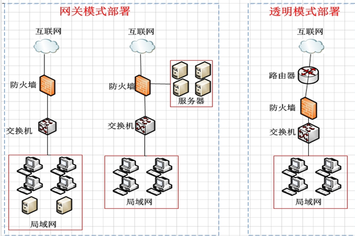

网络安全知识全知道
密码安全
一个强密码是保障网络安全的第一道防线。它应包含大写字母、小写字母、数字和特殊字符的组合，避免使用简单易猜的信息，如生日、电话号码等。例如，“P@ssw0rd123#”就是一个相对较强的密码。定期更换密码也能有效降低密码被破解的风险，建议每隔3 - 6个月更换一次密码，让不法分子难以通过密码破解获取我们的重要信息。
数据加密
数据加密是将原始数据通过特定算法转换为密文，只有使用相应的密钥才能解密还原。在网络传输和存储过程中，数据加密能防止数据被窃取或篡改。像银行交易、企业机密文件传输等场景都广泛应用了数据加密技术。例如，我们在网上购物付款时，支付信息会通过加密通道传输，确保资金安全，这背后就是强大的加密算法在发挥作用。
网络防火墙
网络防火墙如同网络世界的卫士，它可以根据预设的规则，监控和控制网络流量。阻止外部未经授权的访问，同时防止内部网络中的恶意软件传播和数据泄露，为网络安全提供坚实的保障。对于企业网络来说，防火墙能划分不同的安全区域，限制内部员工对敏感区域的非法访问，也能阻挡外部黑客的恶意攻击，是网络安全体系中不可或缺的一环。